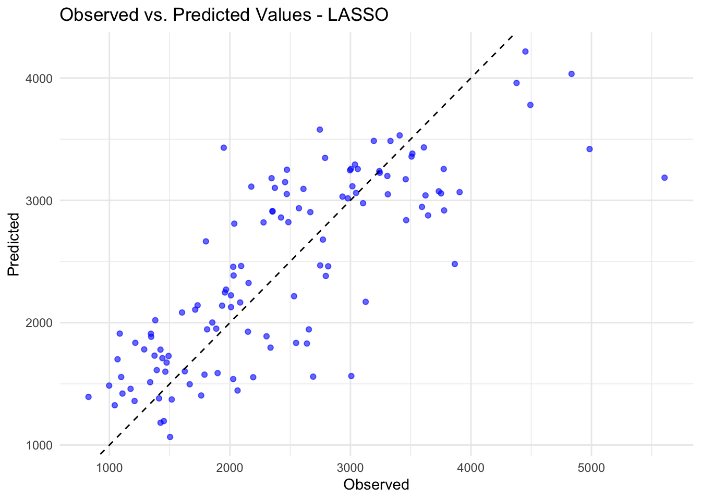

First, I’ll load the necessary packages and set a seed.
More data processing
Based on one of the original papers, the race values are likely: 1 = White, 2 = Black, 7 = Native American, 88 = Other. There are very few people coded as a race of 7 (n=2) and 88 (n=8), so these will be combined.
#Table to see the frequency of each race/ethnicitytable(fitting_data$RACE)
1 2 7 88
74 36 2 8
#Combining 7 and 88 race to be race = 3fitting_data_ml <- fitting_data %>%mutate(RACE =if_else(RACE ==1, 1,if_else(RACE ==2, 2, 3)))#Checking new race codingtable(fitting_data_ml$RACE)
1 2 3
74 36 10
Pairwise correlations
The next bit of code checks to see which variables are continuous and uses those to create a correlation plot. Because there are only 3 levels of dose, even though this is numeric, I’m not considering this as a continuous variable for these purposes.
#Checking to see which variables are continuous (Y, age, wt, ht), I don't consider Dose as continuous since there are only 3 levels summary(fitting_data_ml)
Y DOSE AGE SEX RACE
Min. : 826.4 Min. :25.00 Min. :18.00 1:104 Min. :1.000
1st Qu.:1700.5 1st Qu.:25.00 1st Qu.:26.00 2: 16 1st Qu.:1.000
Median :2349.1 Median :37.50 Median :31.00 Median :1.000
Mean :2445.4 Mean :36.46 Mean :33.00 Mean :1.467
3rd Qu.:3050.2 3rd Qu.:50.00 3rd Qu.:40.25 3rd Qu.:2.000
Max. :5606.6 Max. :50.00 Max. :50.00 Max. :3.000
WT HT
Min. : 56.60 Min. :1.520
1st Qu.: 73.17 1st Qu.:1.700
Median : 82.10 Median :1.770
Mean : 82.55 Mean :1.759
3rd Qu.: 90.10 3rd Qu.:1.813
Max. :115.30 Max. :1.930
Height is negatively correlated with age and positively correlated with weight, but these correlations are moderate and should not cause a major concern.
Feature engineering
Since there was a moderate correlation between weight and height, I’ll combine these variables into a new variable, body mass index (BMI). Units aren’t available for the variables, but based on the age (assuming this is in years) of the participants and values for height and weight, I’m assuming height is reported in meters and weight in kilograms. Therefore, BMI will be calculated as weight/height2.
#the distribution looks like we'd expect based on the distributions of HT and WT
Model building
First fit
The first step to model building is to build initial models.
First model, is the linear model.
# Define a linear model with all predictorslm_all <-linear_reg() %>%set_engine("lm") %>%set_mode("regression")lm_all_wf <-workflow() %>%add_model(lm_all) %>%add_formula(Y ~ .)# Fit both models on the training datalm_all_fit <- lm_all_wf %>%fit(fitting_data_ml)# Compute predictions on training datapreds_lm_all <-predict(lm_all_fit, fitting_data_ml) %>%bind_cols(fitting_data_ml)# Compute RMSE for both modelsrmse_lm_all <-rmse(preds_lm_all, truth = Y, estimate = .pred)paste0("RMSE linear model:", rmse_lm_all$.estimate)
[1] "RMSE linear model:581.41769012258"
# Create the scatter plot of observed vs predictedggplot(preds_lm_all, aes(x = Y, y = .pred)) +geom_point(color ="blue", alpha =0.6) +# Plot pointsgeom_abline(slope =1, intercept =0, linetype ="dashed", color ="black") +# Ideal fit linelabs(title ="Observed vs. Predicted Values - Linear regression",x ="Observed",y ="Predicted") +theme_minimal()
Second model, is the LASSO model.
set.seed(rngseed)# Define a linear model with all predictorslasso_all <-linear_reg(penalty =0.1) %>%set_engine("glmnet") %>%set_mode("regression")lasso_all_wf <-workflow() %>%add_model(lasso_all) %>%add_formula(Y ~ .)# Fit both models on the training datalasso_all_fit <- lasso_all_wf %>%fit(fitting_data_ml)# Compute predictions on training datapreds_lasso_all <-predict(lasso_all_fit, fitting_data_ml) %>%bind_cols(fitting_data_ml)# Compute RMSE for both modelsrmse_lasso_all <-rmse(preds_lasso_all, truth = Y, estimate = .pred)paste0("RMSE LASSO model:", rmse_lasso_all$.estimate)
[1] "RMSE LASSO model:581.46647664791"
# Create the scatter plot of observed vs predictedggplot(preds_lasso_all, aes(x = Y, y = .pred)) +geom_point(color ="blue", alpha =0.6) +# Plot pointsgeom_abline(slope =1, intercept =0, linetype ="dashed", color ="black") +# Ideal fit linelabs(title ="Observed vs. Predicted Values - LASSO",x ="Observed",y ="Predicted") +theme_minimal()

Third model, is the random forest model.
set.seed(rngseed)# Define the model specification using the ranger enginerf_all <-rand_forest(mode ="regression") %>%set_engine("ranger", seed = rngseed)rf_all_wf <-workflow() %>%add_model(rf_all) %>%add_formula(Y ~ .)# Fit both models on the training datarf_all_fit <- rf_all_wf %>%fit(fitting_data_ml)# Compute predictions on training datapreds_rf_all <-predict(rf_all_fit, fitting_data_ml) %>%bind_cols(fitting_data_ml)# Compute RMSE for both modelsrmse_rf_all <-rmse(preds_rf_all, truth = Y, estimate = .pred)paste0("RMSE Random Forest model:", rmse_rf_all$.estimate)
[1] "RMSE Random Forest model:357.554706834752"
# Create the scatter plot of observed vs predictedggplot(preds_rf_all, aes(x = Y, y = .pred)) +geom_point(color ="blue", alpha =0.6) +# Plot pointsgeom_abline(slope =1, intercept =0, linetype ="dashed", color ="black") +# Ideal fit linelabs(title ="Observed vs. Predicted Values - Random Forest",x ="Observed",y ="Predicted") +theme_minimal()
Notes about initial model fit
The RMSE from the linear and LASSO models were very similar with RMSEs of 581.The RMSE of the random forest model was smallest at 358. Predictions were also closer to the observed Y for the random forest model. For all 3 models, there are some points with high observed Y values that are not well predicted by the models.
Tuning the models
Now we’ll tune each model, starting with the LASSO model.
library(tidymodels)set.seed(rngseed)# Define a grid of penalty values (lambda) from 1E-5 to 1E2 on a log scalelambda_grid <-10^seq(log10(1E-5), log10(1E2), length.out =50)# Define LASSO model with a tunable penaltylasso_model <-linear_reg(penalty =tune()) %>%set_engine("glmnet") %>%set_mode("regression")# Create workflowlasso_wf <-workflow() %>%add_model(lasso_model) %>%add_formula(Y ~ .)# Create resampling object using apparent()resamples <-apparent(fitting_data_ml)# Perform tuning with tune_grid()lasso_tune_results <-tune_grid( lasso_wf,resamples = resamples,grid =tibble(penalty = lambda_grid),metrics =metric_set(rmse),control =control_grid(save_pred =TRUE) # Ensure predictions are stored)# Collect tuning resultslasso_results <-collect_metrics(lasso_tune_results)lasso_rmse <- lasso_tune_results$.metrics[[1]]#str(lasso_rmse)#Graphing RMSE by penaltyggplot(lasso_rmse, aes(x = penalty, y = .estimate)) +geom_point() +scale_x_log10() +# Use log scale for penaltylabs(title ="LASSO Tuning - RMSE vs. Penalty",x ="Penalty (log scale)",y ="RMSE") +theme_minimal()
RMSE is relatively constant up until 1e-0.5. After that, RMSE increases almost exponentially. The lowest RMSE is observed for the lowest penalty. As the penalty increases, the shrinkage of the coefficients brings the model closer to the null model (since eventually with enough shrinkage, the coefficients would be 0), and the null model has a higher RMSE than the model with all predictors.
Now on to tuning the random forest model.
set.seed(rngseed)# Define the model specification using the ranger engine, with fixed trees at 300rf_all <-rand_forest(mode ="regression",mtry =tune(), # mtry will be tunedmin_n =tune(), # min_n will be tunedtrees =300# Fix trees at 300) %>%set_engine("ranger", seed = rngseed)# Create a workflowrf_all_wf <-workflow() %>%add_model(rf_all) %>%add_formula(Y ~ .)# Set up the tuning gridrf_grid <-grid_regular(mtry(range =c(1, 7)), # mtry between 1 and 7min_n(range =c(1, 21)), # min_n between 1 and 21levels =7# 7 levels for each parameter)# Create resampling object using apparent()resamples <-apparent(fitting_data_ml)# Perform tuning with tune_grid()rf_tune_results <-tune_grid( rf_all_wf,resamples = resamples,grid = rf_grid,metrics =metric_set(rmse),control =control_grid(save_pred =TRUE) # Ensure predictions are stored)#tune::collect_metrics(rf_tune_results)# Collect tuning resultsrf_results <- rf_tune_results$.metrics[[1]]# Print out metrics to ensure they are being correctly extracted#print(rf_results)#Graphing RMSE by tuning parametersggplot(rf_results, aes(x = min_n, y = .estimate, color =factor(mtry))) +geom_point() +scale_x_log10() +# Use log scale for penaltylabs(title ="Random Forest Tuning - RMSE ",x ="min_n",y ="RMSE") +theme_minimal()
RMSE is lowest for low values of min_n and high values of mtry.
CV tuning
Finally, I’ll perform the same modeling strategy above but with 5-fold cross validation 5 times repeated. First, I’ll run the lasso model.
set.seed(rngseed)# Define LASSO model with a tunable penaltylasso_model_cv <-linear_reg(penalty =tune()) %>%set_engine("glmnet") %>%set_mode("regression")# Create workflowlasso_wf_cv <-workflow() %>%add_model(lasso_model_cv) %>%add_formula(Y ~ .)# Perform tuning with tune_grid()lasso_tune_results_cv <-tune_grid( lasso_wf_cv,resamples =vfold_cv(fitting_data_ml, v =5, repeats =5),grid =tibble(penalty = lambda_grid),metrics =metric_set(rmse),control =control_grid(save_pred =TRUE) # Ensure predictions are stored)# Collect tuning resultslasso_results_cv <-collect_metrics(lasso_tune_results_cv)lasso_results_combo_cv <- lasso_tune_results_cv$.metrics %>%map2_df(.y =seq_along(.), ~mutate(.x, fold_index = .y))#autoplot(lasso_results_cv)#str(lasso_results_cv)#Graphing RMSE by penalty ggplot(lasso_results_cv, aes(x = penalty, y = mean)) +geom_point() +scale_x_log10() +# Use log scale for penaltylabs(title ="LASSO Tuning - RMSE vs. Penalty",x ="Penalty (log scale)",y ="RMSE") +theme_minimal()
#Graphing RMSE by penalty by CV foldggplot(lasso_results_combo_cv, aes(x = penalty, y = .estimate, color =factor(fold_index))) +geom_point() +scale_x_log10() +# Use log scale for penaltylabs(title ="LASSO Tuning - RMSE vs. Penalty by CV fold",x ="Penalty (log scale)",y ="RMSE") +theme_minimal()
The RMSE for most folds follows the same pattern as the non-CV version above. There’s also substantial variation in RMSE between the CV folds.
Now on to tuning the CV random forest model.
set.seed(rngseed)# Define the model specification using the ranger engine, with fixed trees at 300rf_all_cv <-rand_forest(mode ="regression",mtry =tune(), # mtry will be tunedmin_n =tune(), # min_n will be tunedtrees =300# Fix trees at 300) %>%set_engine("ranger", seed = rngseed)# Create a workflowrf_all_wf_cv <-workflow() %>%add_model(rf_all_cv) %>%add_formula(Y ~ .)# Perform tuning with tune_grid()rf_tune_results_cv <-tune_grid( rf_all_wf_cv,resamples =vfold_cv(fitting_data_ml, v =5, repeats =5),grid = rf_grid,metrics =metric_set(rmse),control =control_grid(save_pred =TRUE) # Ensure predictions are stored)autoplot(rf_tune_results_cv)
# Print out metrics to ensure they are being correctly extracted#print(rf_results)#str(rf_tune_results_cv)#Graphing RMSE by tuning parametersggplot(rf_results_combo_cv, aes(x = min_n, y = .estimate, color =factor(mtry))) +geom_point() +scale_x_continuous() +# Use log scale for penaltylabs(title ="Random Forest Tuning - RMSE ",x ="min_n",y ="RMSE") +facet_wrap(rf_results_combo_cv$fold_index) +theme_minimal()
Based on the tuned, random forest, CV model, models randomly selecting at least 4 predictors had comparable performance as models with more predictors for each level of min_n. RMSE was lowest for models with higher mtry values. Models with an mtry value of 5, 6, or 7 behaved similarly, and RMSE decreased with increasing min_n.
Conclusions
Based on these results, the LASSO model with a small penalty (e.g., <1) seems to fit best. There is a lot of variation in RMSE by CV fold for the LASSO and random forest models, but in general the CV LASSO model had a lower RMSE (~615) than the CV random forest model (670-690 depending on the number of variables included). Both RMSEs are higher than in the models that did not use CV. Because all predictors are adding information to the model and the random forest model is a conglomeration of many models that use a subset of predictors, it is not surprising that the LASSO model has a lower RMSE.